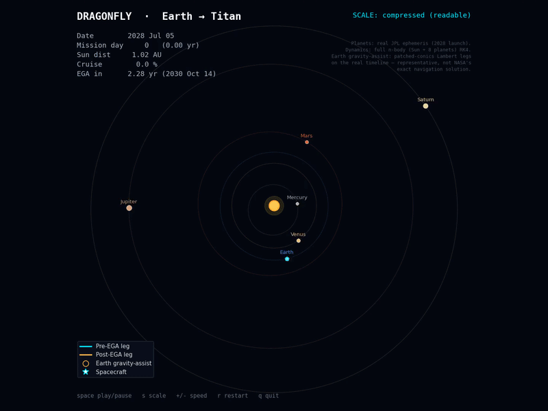
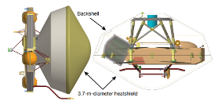
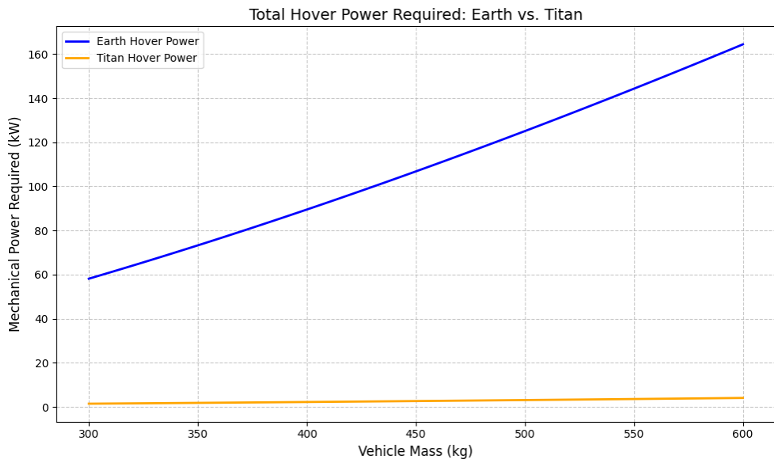
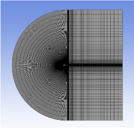
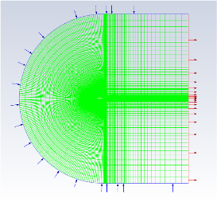
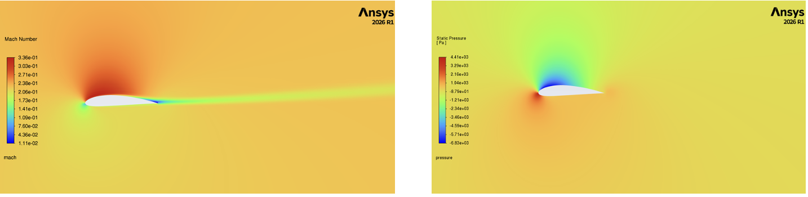

03 · Aerospace Systems
A momentum-theory and CFD analysis of the hover power NASA's Dragonfly octocopter needs to fly on Titan - combining blade element aerodynamics with 2D airfoil CFD to correct the ideal induced power estimate for real profile drag, then closing the loop on why Dragonfly's mission has to be a "charge and hop" architecture rather than continuous flight.
Mission Overview
Dragonfly is a car-sized, nuclear-powered rotorcraft - an octocopter, with eight rotors - that NASA will fly across the surface of Titan, Saturn's largest moon. If successful, it will be the first aircraft to fly on Titan and the first powered, fully controlled atmospheric flight on any moon in the solar system.
The science case is what justifies flying instead of landing once and staying put: Titan has carbon-rich organic chemistry, a thick nitrogen atmosphere, surface liquid methane, and a buried liquid-water ocean - a natural laboratory for the chemistry that precedes life, and one that can't be reproduced in an Earth lab. Dragonfly carries a mass spectrometer and a gamma-ray/neutron spectrometer to sample surface composition and search for biosignatures that could indicate water-based or hydrocarbon-based life. Selk crater, a roughly 50-mile-wide impact site likely to hold liquid water mixed with organics, is a primary target - Titan's dense nitrogen atmosphere without oxygen closely resembles what early Earth may have looked like billions of years ago.
Launch and Cruise
Dragonfly launches on a SpaceX Falcon Heavy from Kennedy Space Center pad LC-39A, with a launch window between July 5-25, 2028, arriving at Titan roughly six years later in 2034. Rather than the Jupiter gravity-assist typically used to reach Saturn, Dragonfly performs an Earth gravity-assist flyby on its way out, since Jupiter won't be usefully positioned along this particular flight path.
What makes Dragonfly different from every prior planetary surface mission is that it relocates by air. A fixed lander like Huygens or Phoenix studies one spot; a rover like Curiosity or Perseverance drives slowly between sites. Dragonfly flies - and flying happens to be far easier on Titan than on Earth: the atmosphere is roughly 4x as dense and gravity is only about 13.8% of Earth's, so the power needed to fly is roughly 40x lower than an equivalent vehicle would need here. This will be only the second powered rotorcraft to fly beyond Earth. Power comes from a Multi-Mission Radioisotope Thermoelectric Generator (MMRTG), which recharges the craft's battery during Titan's long, roughly 8-Earth-day night, and Dragonfly communicates straight home over a high-gain antenna with no relay orbiter needed.

Simulated trajectory - Earth gravity-assist flyby followed by the roughly six-year cruise out to Titan
The rotorcraft doesn't operate independently during transit. The cruise stage handles deep space navigation, communication with Earth's Deep Space Network, and thermal control through the freezing outer solar system, while the car-sized rotorcraft itself rides encapsulated inside a 3.7-meter-diameter heatshield/aeroshell (built by Lockheed Martin Space) that protects it in deep space and shields it during atmospheric entry. Since solar power isn't viable this far from the sun, the MMRTG converts the decay heat of radioisotope materials directly into electricity, and a dedicated pumped fluid loop keeps propellant tanks, electronics, and valves warm without ever having to draw down the battery.

Aeroshell configuration - the 3.7 m heatshield and backshell protect the rotorcraft through deep space cruise and atmospheric entry
Entry, Descent, and Landing
The aeroshell enters Titan's atmosphere at roughly 7.4 km/s, deploying a drogue parachute at Mach 1.5 to stabilize the descent. The heat shield uses PICA-D (Phenolic Impregnated Carbon Ablator), rated for a peak heating of 254 W/cm² at entry. A 16-meter main parachute deploys near 5 km altitude, slowing descent to under 3 m/s over a total descent duration of 105 minutes, at which point the heatshield separates and exposes Dragonfly to Titan's environment ahead of the transition to powered flight.
Dragonfly is released from the backshell at 1,000 m altitude and flies itself the rest of the way to the surface under rotor power - no sky crane required. That's a direct consequence of Titan's atmosphere: 4x denser and roughly 1/7 the gravity of Earth's, which together make rotorcraft-powered descent both feasible and efficient in a way it simply isn't for a Mars lander of similar size.
Hover Power Physics
Titan's atmosphere sets the whole power budget: density ρ = 5.35 kg/m³ (4.4x Earth's), gravitational acceleration g = 1.352 m/s² (13.8% of Earth's), surface temperature around 95 K, and a composition that's roughly 95% nitrogen. Under simple momentum theory, lift scales as L = ½ρv²CL, so the 4.4x denser atmosphere generates 4.4x more lift per unit rotor speed than the same rotor would produce on Earth. Ideal hover power follows from P = T3/2/√(2ρA), where T is hover thrust, ρ is air density, and A is total disk area - meaning power scales as 1/√ρ, so a denser atmosphere directly reduces the power needed to generate a given amount of thrust.
Dragonfly's 8 counter-rotating coaxial rotors (1.35 m diameter each) cancel torque against each other by design. Combining Titan's higher density and lower gravity into a single ratio against Earth - PT/PE = (gT/gE)3/2 / √(ρT/ρE) - shows that Dragonfly needs only about 2.5% of the power an equivalent vehicle would need to hover on Earth, which is the entire reason aerial exploration of Titan is viable in the first place.

Total hover power required, Earth vs. Titan, across a range of vehicle masses - Earth's curve rises past 160 kW at 600 kg while Titan's stays under 5 kW across the same range
Why Bring In CFD
The momentum theory result above is a genuinely useful first-order estimate, but it only captures induced power - the power needed to accelerate air downward and generate thrust. It ignores profile drag power: the power needed just to spin the blades themselves through the air, independent of the lift they produce. Total hover power is really Ptotal = Pdrag + Pinduced, and getting drag power requires actually resolving the flow around a real rotor blade cross-section - which is what the 2D airfoil CFD analysis was built to do, connecting Titan's atmospheric conditions, low gravity, and rotor geometry to a true total power estimate rather than an idealized lower bound. Getting this right matters beyond academic completeness: power availability directly limits Dragonfly's flight time, hop distance, battery sizing, and overall mission planning.
CFD Model Setup
A C-mesh was built around a representative rotor blade cross-section, with 100 divisions along the arc and 50 divisions along the straight edges, biased toward the airfoil surface. The mesh was refined near the leading edge, trailing edge, and wake specifically so drag would not be dominated by numerical error rather than real flow physics. Boundary conditions: a velocity inlet at 45 m/s with components set for each angle of attack tested, a pressure outlet at gauge pressure zero, and a no-slip wall on the airfoil surface itself.


C-mesh refined at the leading edge, trailing edge, and wake (left) - boundary conditions: velocity inlet, pressure outlet, no-slip airfoil wall (right)
The 45 m/s inlet velocity isn't arbitrary - it's the representative blade velocity at the 70% radial station (r/R = 0.7), the standard reference point for characterizing rotor blade aerodynamics. With a rotor speed of 900 RPM and rotor radius R = 0.675 m, V = ωr = (2π · 900/60)(0.7 × 0.675 m) ≈ 45 m/s. Titan's atmosphere was modeled with dynamic viscosity μ = 6.5×10⁻⁶ Pa·s, specific heat 1040 J/(kg·K), thermal conductivity 0.009 W/(m·K), and molecular weight 27.4 kg/kmol, at a temperature of 94 K and operating pressure of 147 kPa.
Compressibility couldn't be ignored despite the modest 45 m/s freestream: Titan is extremely cold (~95 K), so the speed of sound there is only about 198 m/s - meaning 45 m/s already sits around Mach 0.23, and flow accelerating over the top of the airfoil locally exceeds Mach 0.3, the threshold where compressibility effects start to matter. Fluent was set up accordingly: pressure-based solver, steady, 2D, k-ω SST turbulence model, constant density, gravity off, energy equation on, and second-order upwind momentum discretization.
Results
| AoA | Cd | Cl | Drag | Lift | Cl/Cd |
|---|---|---|---|---|---|
| 0° | 0.0213 | 0.4398 | 10.93 N | 226 N | 20.65 |
| 5° | 0.0302 | 0.822 | 15.65 N | 423 N | 27.22 |
| 10° | 0.0712 | 0.9143 | 35.9 N | 471 N | 12.84 |
| 15° | 0.1431 | 0.9202 | 73.14 N | 474 N | 6.43 |
Cl rises steadily from 0° to 10-15° of angle of attack, but drag rises much faster at the higher angles - Cd nearly triples between 5° and 10° while lift barely increases. The best aerodynamic efficiency in this data set lands at 5°, where Cl/Cd peaks at 27.22 - this is the operating point used for the final power calculation below.

Mach number (top) and static pressure (bottom) contours at 5° angle of attack - flow accelerates and locally exceeds Mach 0.3 over the upper surface, confirming the need to model compressibility
Closing the Loop
The CFD result is for one 2D airfoil section at one operating point - the last step is scaling it up to the real 8-rotor vehicle at its actual hover condition, using the 5° result as the reference since it's the most aerodynamically efficient point tested.
| Quantity | Expression | Value |
|---|---|---|
| Hover thrust | T = mg | 1,182 N |
| Total disk area | Atotal = 8πR² | 11.45 m² |
| Ideal induced power | Pideal = T3/2/√(2ρAtotal) | 2,374 W |
| Actual induced power | Pinduced = Pideal/FM, FM ≈ 0.75 | 3,165 W |
| Required lift per rotor | Lreq = T/8 | 147.7 N |
| Effective tip speed | Veff = 45·√(Lreq/LCFD) | 26.6 m/s |
| Scaled drag per rotor | Deff = DCFD·(Lreq/LCFD) | 5.47 N |
| Profile drag power (8 rotors) | Pdrag = 8·Deff·Veff | 1,164 W |
| Total hover power | Ptotal = Pinduced + Pdrag | 4,329 W |
Titan's thick atmosphere and low gravity mean Dragonfly only needs about 4.3 kW to hover - roughly the power draw of a residential central AC unit. The CFD-derived profile drag term accounts for about 25% of that total, which is exactly the piece the momentum-theory-only estimate misses. But 4.3 kW is still a substantial amount of continuous power for a deep-space probe - the MMRTG only generates about 100 W of continuous electrical power, more than an order of magnitude short of what's needed to fly. The direct mission-design consequence: Dragonfly cannot fly continuously. It has to sit and charge its battery for an extended period before each short flight - a "charge and hop" architecture dictated entirely by this power gap.
Reflection
Momentum theory alone gets you 73% of the answer - the 2,374 to 3,165 W induced power estimate is real and useful, but it's silent on the roughly 25% of total hover power that goes into just spinning the blades through the air. Knowing which physics a first-order model leaves out, and having a way to go get it, is the actual engineering skill here.
Scaling a single 2D CFD result up to a full vehicle estimate required real engineering judgment, not just a lookup: picking the 5° operating point as the efficiency reference, then scaling both drag and effective tip speed by the ratio between the CFD lift and the true required lift per rotor. That scaling logic is the bridge between a section-level simulation and a vehicle-level power budget.
The 4.3 kW result versus the MMRTG's 100 W continuous output isn't just a number - it's the reason Dragonfly's entire mission architecture is "charge and hop" instead of continuous flight. A power budget calculation, done carefully, doesn't just describe a vehicle's performance - it determines the shape of the whole mission.